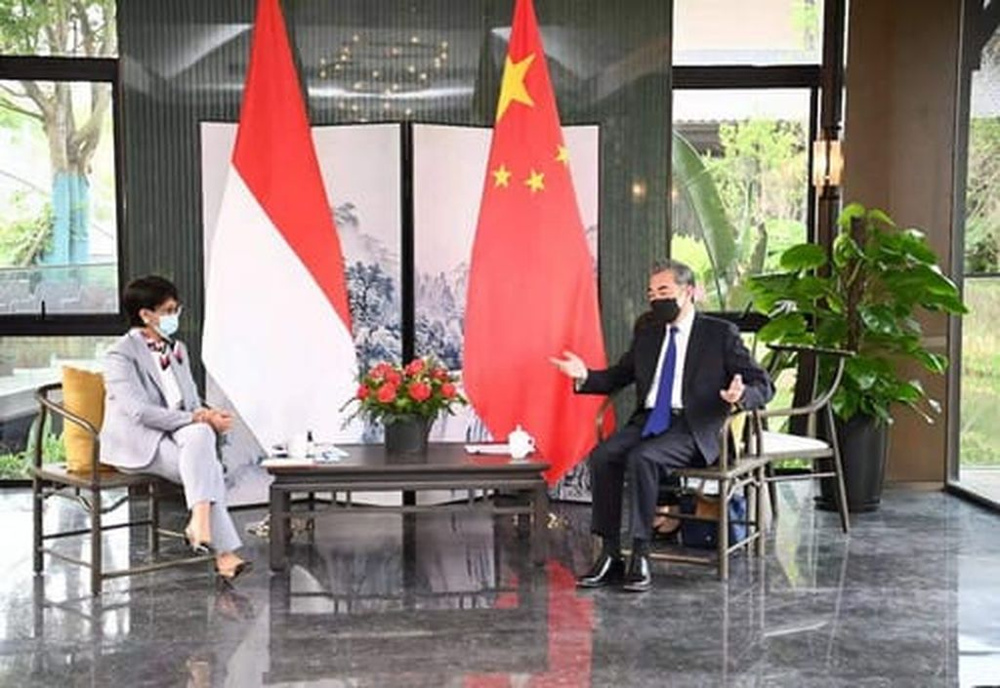

.png)

Kerjasama: Pembentukan ROMPT (Program on Public Health Emergency Preparedeness Capacity)
Tujuan: Mengurangi korban yang mengalami sakit COVID-19
Kasus: Pada tahun 2019, pandemi COVID-19 muncul dan mengguncang dunia. Bidang kesehatan pasti akan mengalami kesulitan kalau negara tidak mempersiapkannya dengan baik. Upaya diplomasi negara-negara diperhitungkan untuk mengatasi masalah kesehatan selama pandemi. Dalam situasi ini, pejabat Indonesia dan China bekerja sama untuk mengendalikan wabah penyakit dengan lebih baik. Indonesia dan China menyusun strategi diplomasi kesehatan dimana dalam penelitian mereka, mereka berusaha untuk menguraikan strategi tersebut. Secara khusus penelitian ini menggunakan pendekatan penelitian kualitatif, dengan fokus pada analisis deskriptif. Dukungan China terhadap inisiatif ROMPT (Program on Public Health Emergency Preparedeness Capacity) dalam menghadapi COVID-19 menjadi sorotan, begitu juga dengan bantuan China dalam memberikan peralatan media, kerja sama diplomasi vaksin, bantuan dalam bentuk teknologi canggih, dan penelitian ilmiah.